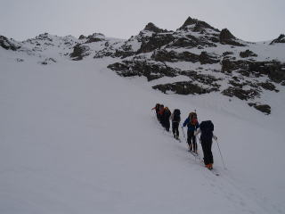
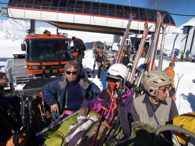

|
|||||||||||||||||||||||||||
|
|||||||||||||||||||||||||||
|
コーカサス スキー & エルブルース |
| ブラウザーの設定により、この頁の最上部に下記の警告表示が出ることがあります。 これをクリックして、コンテンツを許可すると、動画スタート画面が表示されます |
||||
| 中央に三角印が付いたのが動画です。５本あります。三角印をクリックするとスタートします。コメントが出た場合は、「YouTubeで見る」をクリックしてください。 | 実 施 日 | ２０10年３月３０日〜4月１２日 | ||
| 発起人 |
佐藤文昭 | |||
| 報 告 者 | 平野裕也、羽田登志男(ビデオ | |||
| ＨＰ制作者 | 徳永泰朗 佐藤文昭 | |||
| 参加者数 | ８名 （会員７名、非会員１名） | |||
| ヨーロッパ最高峰エルブルースを望みながら歩く |
| 1日目 3月30日（火） 成田—モスクワ
17:50にモスクワＤターミナルに着く。12時間の旅だった。 |
| １２：００成田発モスクワ経由ロンドン行アエロフロート機に搭乗 | |
| 2日目 3月31日（水） モスクワ—ミンボディー—アザウ
6:40シャトルで空港Ｄターミナルへ。出発前から厳しい荷物制限で脅されたが、手荷物は計量されなかった。トイレが汚いソ連時代からの旧式イリューシン３発ジェット機で11：20にミンボディー空港着。 |
| A | ||
| 現地はサマータイム ６時をまわっていても薄暗い | 走ること３時間、やっと行く手に雪山が・・・ |
|
3日目 4月1日（木） 晴れ 8：55タクシー2台でホテルを出発、エルブルース村を越えたあたりでバクサン谷右岸のアデュルス谷に入る。 |
 |
A | |
| ベースにした「シェラザードホテル」、未だ工事中 | 文字通り「煙幕」を張って走る我らの“バス” |
| A | ||
| 板のシートに吊革もなく、奇妙な連帯が漂った | 外見瀟洒、内部はボロボロ |
 |
A |  |
| ランチの後、早速板を履いて足慣らしに600ｍ登る | ボロボロでも仲間と酒があれば楽しいひと時が |
|
４日目 4月2日（金） 晴れのち雪 |
| A |  |
| A | ||
| コーカサスの山小屋でも真向法体操、ゆる体操は欠かせない | ||
|
５日目 4月3日（土） 晴れ 8時にロッジを出発、少しアデュルス谷を詰めてから右岸に落ちるチョチャットリッジに沿った沢を詰める。 |
| A | ||
| 滝のそばはスキーを担ぐ | 点ほどにしか見えないが、マウンテンゴートが |
| A | ||
| オータオキャンプ前で帰りのトラックを待ちながら | 往きも帰りもパスポートチェックで待たされる |
| オータオキャンプ3日間の行動。左上部三色の結合部分が キャンプ、1日目青色、2日目赤色、3日目緑色の表示である |
|
６日目 4月4日（日） 晴れ、雪のち晴れ 8時、タクシーでアディルス谷に向かう。途中、ボーダーコントロールでパスポートチェックを受け、10時にジャントガンキャンプ着。3165ｍのグマチパスを目指す。ガスが出て降雪が激しい。重い新雪にガイド達はラッセルに手間取り、グマチパス手前で引返すことになる。 |
 |
A | |
| アディルス谷への下りでは重い雪に苦労した | ガイドのウラジミールを中心に夜のミーティング |
 |
| 右の赤いラインが本日のアディルス谷ジャントガンキャンプからグマチパスまでの軌跡 左はアデュルス谷、昨日までの3日間の軌跡 上部、黄色のラインの外は紛争の国、グルジアとなる ＧｏｏｇｌｅＥａｒｔｈがインストールしてあれば上記画像のクリックで、ＧｏｏｇｌｅＥａｒｔｈがスタートします。 |
|
７日目 4月5日（月） 晴れ、雪のち晴れ 9：00にホテルを出発、ゴンドラ2回乗り継ぎで3400ｍのミール駅へ。初めてまじかにエルブルースを見る。すぐにでも届きそうだが標高差は2000ｍ以上ある。 |
| A | ||
| スノーキャットの踏んだ跡を４１５７ｍまで登る | ノートラックの斜面をガラパシ氷河目指して滑降 |
|
８日目 4月6日（火） 晴れ 外人チームは全員特大のダッフルバッグや特大寝袋を持っているので荷物は多く、歩いてバレルス小屋に入るのは難しいのでスノーキャットをチャーターする。1台300または400ユーロ（約14000ルーブル、約50000円）で贅沢品は高い。2台に分乗して20分、標高差で400ｍ足らずを登り、標高3800ｍのガラバシ小屋（バレルハット）に横付けする。 快晴の空の北に主峰エルブルース（5643ｍ）、南にはかにの爪のような双耳峰を持つコーカサスの鋭峰ウシュバをはじめ4000ｍ超級の峰々が連なる。 7個並ぶドラム缶の宿舎（6人1部屋、電気ストーブあり、暖かい）に荷物を入れ、食堂棟で軽いランチをとり12時にアイゼン歩行訓練と高所順応を兼ねて出発。 今日も羽田、平野2名は外人と一緒になり先行する。4505ｍの地点にスキーをデポ、そこからアイゼンに履き替え4700ｍのバスツーコフ岩まで登る。午後5時を過ぎ、寒くなる。17：50にバレルハットに戻る。トイレは2箇所作ってあるが1つはすでに満杯でテリブル状態。もうひとつも怪しげだが小便もトイレ以外では禁止（水作りのため）とのことでひどく評判が悪い。デンマークの1名が下山する。 |
|  | A | |
| 昨日シール登行した斜面をスノーキャットで上がる | コーカサスの主峰ウシュバを背にして登行 |
| A | ||
| 雪に埋まったガラパシ小屋（バレルハット） | 4000ｍ超のパフォーマンス おバカさんは全裸にまでなった。証拠写真あり。 |
| A | ||
| ロシアの美人女性のお給仕で食事 | バレルハットの室内 壁は円いが床は平らだ |
| エルブルースに刻んだＧＰＳの軌跡 |
|
９日目 4月7日（水）晴れ 休養日 今日は1日休養日、相変わらず晴れている。風もなく今日は絶好の登頂日和のようだ。しかし我ら8人グループでは体調不良の者も出始め、相談の結果、羽田、河野、平野の3名が残留、あとは下山することに決定、11時にドミトリとともに下る。午後は記録の整理などして時間をつぶす。残らなかった5名の理由は様々であった。 |
| A | ||
| 手編みの帽子や手袋が並ぶ土産物店 下山した5人はのどかな麓でくつろいだ | ||
|
１０日目 4月8日（木）風雪 登頂を目指して残った3名は3時に起床した。 |
| A | ||
| 降り続く雪にバレルの入口も、もともと使い勝手の悪かったトイレも埋まりそうだ | ||
|
１１日目 4月9日（金）晴れ 目覚めると快晴、残念の一語であるが、我ら8名とアメリカ人1名、ノルウェーの女性1名、計8名でチェゲットスキー場に出かける。 |
| A |  |
|
| 乗合バスでチェゲットスキー場へ向かう | 一人目 |
| A | ||
| 二人目 | 三人目 |
| A | ||
| 四人目 | 五人目 |
| Ａ | ||
| 六人目 | 七人目 |
| リフトの山頂駅から2時間ほど登って小ピークに立ち、広大なバーンをほしいままにし、 そのあと日本の春山を思わせる開けた沢筋に滑り込んだ |
| Ａ |
| パーティー |
| A | ||
| そして八人目の感動のスピーチが全てを締める | コーカサススキーにカンパーイ ハラショー ! |
| A | ||
| 女性スタッフ３名、ガイドと炊事担当 | ウォッカをお酌してダンスに誘う、愛嬌満点 |
|
１２日目 4月10日（土）晴れ 天気が良いが雪が悪いので最後の日を付近の散歩に充てる。道路わきに無造作に置かれた雪崩対策用の榴弾砲で遊んだり、咲き始めたオドワンチュカ（フクジュソウに似た花）を楽しみながら早春のバクサン谷を5ｋｍほど下り、鉄分を含んだ炭酸水が湧き出る涌水公園まで行く。 |
| A | ||
| ザックと兼用靴から解放されて足取りも軽く | 真冬のバクサン谷に轟く砲声を聞いてみたいな |
| A | ||
| 10日間、雪原に慣れた目には眩しく清新だった | 鉄分の匂いが強烈な涌水だった |
|
１３日目 4月11日（日）晴れ 7：55にホテルを出発、帰途に着く。タクシーで3時間、ミンボディー空港に到着する。 ミンボディーからモスクワに飛び、モスクワ発19：40のアエロフロートは12日の10時過ぎに成田に到着、２週間のスキー旅が終了した。 |
| A | ||
| 10日間楽しませてくれたコーカサスが遠ざかる | モスクワ空港でもたっぷりの待ち時間にゆる体操 |
{kind=link}